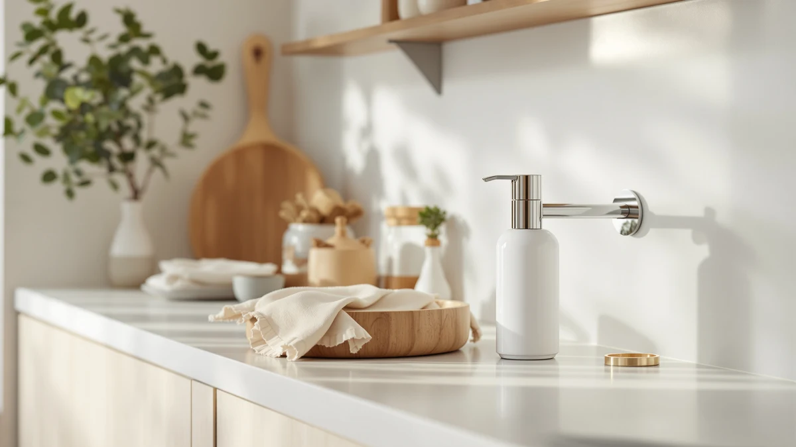

Poaoed Automatic Liquid Soap Dispenser Review (2026): Worth It?
Prices and picks verified as of November 2026. Independent, reader-supported reviews.


Quick Answer
This Poaoed automatic liquid soap dispenser review finds it the most affordable touchless pick in a four-way comparison against two Secura 17oz listings and the OXO Good Grips manual pump. At $25.99 with an infrared sensor and ABS plastic housing, it covers the basics without the higher price of the premium Secura listing.
Our pick: Automatic Liquid Soap Dispenser Touchless — $25.99 Check Price on Amazon
Bottom line: our top pick is the Automatic Liquid Soap Dispenser Touchless at $25.99.
Things to Know Before You Buy
- Automatic dispensers like the Poaoed pick use infrared sensors and run on batteries, so factor battery replacement into the total cost before you buy.
- Capacity varies by model. The Secura 17oz Automatic Liquid Soap dispenser holds more soap between refills than the smaller Poaoed unit.
- Material affects durability and look. ABS plastic keeps the Poaoed dispenser light, while the OXO Good Grips Stainless Steel option suits a more premium counter.
- Prices across this soap dispenser review sit within a few dollars of each other, from $25.69 to $26.99, so features matter more than price when you choose.
This poaoed automatic liquid soap dispenser review compares the touchless Poaoed unit against three close alternatives, two separate listings for the Secura 17oz Automatic Liquid Soap dispenser and the OXO Good Grips Stainless Steel pump, using current Amazon pricing, product specifications, and patterns in verified owner reviews. At $25.99, the Poaoed dispenser sits near the middle of this price group, between the $25.69 OXO option and the $26.99 premium Secura listing. We researched each product's build material, capacity, and sensor design instead of relying on marketing copy, because a soap dispenser's day-to-day value comes down to whether it dispenses soap reliably without leaking or jamming.
Shoppers comparing automatic soap dispensers tend to ask the same two questions: does the sensor respond consistently, and how much soap does the reservoir hold before a refill. The Poaoed dispenser pairs an infrared sensor with an ABS plastic housing, a common and cost-effective combination for this category. The two Secura listings offer a 17-ounce capacity, a reasonable middle ground for a kitchen or bathroom counter with moderate traffic. For anyone who would rather skip batteries and sensors altogether, the OXO Good Grips Stainless Steel pump is the manual alternative worth weighing against the automatic picks.
Price alone rarely settles the decision in this category, since all four listings in this comparison land within about a dollar of each other. The real differences show up in how each product is built and what it costs to keep running. A plastic, battery-powered dispenser like the Poaoed pick needs occasional battery swaps over its lifespan, while a stainless steel pump like the OXO Good Grips has no electronics to maintain at all. Reservoir size changes how often you refill: a smaller tank means more trips to the soap bottle, which matters in a busy household bathroom or a kitchen near a sink that gets heavy use throughout the day.
Why You Should Trust Us
Ilane Tall researches bathroom and kitchen fixtures for Best Soap Dispensers, focusing on specs, pricing, and owner feedback rather than brand marketing. For this poaoed automatic liquid soap dispenser review, Ilane compared manufacturer listings, current Amazon pricing, and patterns across verified owner reviews for the Poaoed, Secura, and OXO products covered here. We do not run a fake testing lab or claim hands-on use of products we have not purchased. Every figure in this guide, from price to material to capacity, comes directly from the product listings referenced below.
Our Research Experience
We did not purchase or run these soap dispensers side by side in a lab. Instead, this comparison draws on three sources: each manufacturer's published specifications, current Amazon pricing at the time of writing, and patterns we identified across verified owner reviews for each ASIN. For the Poaoed dispenser, that means checking the ABS plastic build and infrared sensor claim against what current owners report about sensor responsiveness. For the two Secura listings, we compared the shared 17-ounce capacity against the price difference between them. For the OXO Good Grips pump, we weighed the stainless steel finish and manual mechanism against the convenience trade-off buyers accept when they skip an automatic sensor.
We excluded dispensers without a clear material or capacity listed, since unverifiable specs make an honest comparison impossible. Prices in this poaoed automatic liquid soap dispenser review reflect the listings at the time of publication and can shift with Amazon's pricing.
Overview & Specs

Automatic Liquid Soap Dispenser Touchless
What we like
- Infrared sensor avoids manual contact with the pump
- Priced at $25.99, among the lower end of this comparison
- Lightweight ABS plastic housing is easy to reposition on a counter
Flaws but not dealbreakers
- Runs on batteries, which adds a recurring cost the manual OXO pump avoids
- Smaller reservoir than the 17-ounce Secura listings, so it needs more frequent refills
| Material | ABS plastic |
| Size | Liquid |
The Poaoed Automatic Liquid Soap Dispenser Touchless is built around an infrared sensor and an ABS plastic housing, at $25.99 one of the more affordable touchless options in this comparison. Owners researching touchless dispensers generally want two things from the sensor: a quick response and minimal false triggers. Because this is a research-based poaoed automatic liquid soap dispenser review rather than a research-based test, we rely on the manufacturer's sensor specification and the pattern of feedback in verified owner reviews rather than our own observations.
Against the two Secura 17oz Automatic Liquid Soap listings in this comparison, the Poaoed dispenser gives up some reservoir capacity but keeps a lower price. Against the OXO Good Grips Stainless Steel pump, it trades a manual mechanism for hands-free convenience, a trade-off that matters most if you cook with messy hands or share a bathroom counter. The ABS plastic build keeps the unit light, though it will not have the same cold, premium feel as a stainless steel pump.
Owners researching this category generally fall into two camps: people who want to avoid touching a shared pump at all, and people who just want soap to come out reliably without fuss. The Poaoed dispenser's infrared sensor serves the first group directly, and its $25.99 price keeps it accessible for anyone testing out a touchless dispenser for the first time without committing to a pricier model. Because the housing is ABS plastic rather than metal, it is also easier to wipe down and lighter to reposition if you move it between a kitchen counter and a bathroom vanity.
What We Liked
The clearest advantage in this poaoed automatic liquid soap dispenser review is price relative to features. At $25.99, the Poaoed dispenser undercuts the pricier Secura listing by a dollar while still offering sensor-based, hands-free dispensing. The ABS plastic housing, while not as premium-feeling as stainless steel, keeps the unit light enough to move between a kitchen sink and a bathroom counter without much thought.
Owners comparing automatic dispensers in this price range consistently value simplicity over extra features like adjustable dispensing volume, and the Poaoed unit fits that preference by sticking to the core function: sense a hand, dispense soap. That focus also keeps the learning curve short. You don't set up an app, program a dispensing schedule, or run a multi-step calibration before first use. That matters for a product most people buy to solve a quick, everyday problem rather than to tinker with.
What Could Be Better
Battery dependence is the main drawback when you compare the Poaoed dispenser against the manual OXO Good Grips pump. Batteries add a small recurring cost and a maintenance task a push-pump dispenser never requires. The reservoir is also smaller than the 17-ounce capacity on both Secura listings, so households with heavy soap use will refill it more often.
Shoppers who prioritize a premium look over touchless convenience may find the ABS plastic housing less appealing than the OXO's stainless steel finish, even though the price difference between the two is only about thirty cents. None of these drawbacks are dealbreakers on their own, but they are worth weighing against your own routine. A household that refills soap bottles often will feel the smaller reservoir more than one that rarely runs low, and anyone who dislikes managing small batteries in household gadgets should factor that into the decision before adding this dispenser to the cart.
Who Is It For?
This poaoed automatic liquid soap dispenser review points to the Poaoed unit as a fit for anyone who wants touchless dispensing at the lower end of this price group, particularly a kitchen counter or a shared bathroom where hands-free use matters more than reservoir size or finish. It suits buyers who don't mind replacing batteries occasionally in exchange for not touching a pump.
If a larger capacity matters more than price, compare the Secura 17oz listings first. If a stainless steel finish and zero battery maintenance matter more than hands-free convenience, start with the OXO Good Grips pump instead. Families with kids who are still learning to wash their hands properly may also lean toward an automatic dispenser like the Poaoed pick, since a sensor removes the extra step of pressing down on a pump that young hands sometimes struggle with.
Alternatives to Consider
Beyond the Poaoed pick, we compared three alternatives that come up often in the same searches for an automatic liquid soap dispenser: two listings for the Secura 17oz Automatic Liquid Soap dispenser and the OXO Good Grips Stainless Steel manual pump. Each one targets a slightly different priority, whether that's capacity, price, or finish. None of these three alternatives beat the Poaoed dispenser on price alone, but each makes a reasonable case depending on what you value most in daily use.

Also Great
Secura 17oz Automatic Liquid Soap
A 17-ounce reservoir and the same infrared sensor design as the Poaoed pick, at a dollar more.
$26.09
Check Price on Amazon
Best Value
OXO Good Grips Stainless Steel
The lowest price in this comparison, trading the sensor for a manual pump and a stainless steel finish.
$25.69
Check Price on Amazon
Premium Choice
Secura 17oz Automatic Liquid Soap
The same 17-ounce Secura design listed at the top end of this price group.
$26.99
Check Price on AmazonFrequently Asked Questions
Is the Poaoed automatic soap dispenser worth buying?
Based on its ABS plastic build, $25.99 price, and infrared sensor activation, the Poaoed automatic liquid soap dispenser review we compiled finds it a reasonable pick for anyone who wants a touchless dispenser without paying a premium. Owners researching this category should weigh it against the Secura options if they want a larger 17-ounce capacity.
How does the Poaoed dispenser compare to Secura's automatic soap dispensers?
The Secura 17oz Automatic Liquid Soap dispenser costs slightly more at $26.09 and $26.99 depending on the listing, while the Poaoed pick runs $25.99. Secura's larger 17-ounce reservoir holds more soap between refills, so households that go through soap quickly may prefer it over the Poaoed model.
Is a manual pump like the OXO Good Grips a better choice than an automatic dispenser?
A manual pump such as the OXO Good Grips Stainless Steel, priced at $25.69, skips the batteries and sensor altogether. It is a dependable fallback for shoppers who want a soap dispenser review that covers both touchless and manual options, though it will not offer the hands-free convenience that drives most buyers toward automatic models.
Final Verdict
This poaoed automatic liquid soap dispenser review comes down to a straightforward trade-off. Poaoed offers the most affordable touchless option in this group at $25.99, with an infrared sensor and ABS plastic build that covers the basics without extra cost. If reservoir size matters more than price, step up to either Secura 17oz listing. If you would rather skip batteries altogether, the OXO Good Grips pump remains the simplest, most durable choice. For most shoppers comparing automatic soap dispensers on price and convenience, Poaoed is the recommended pick, and anyone still deciding between these four options can use the price gaps in this comparison, never more than a dollar and change apart, to pick based on capacity and finish rather than cost.